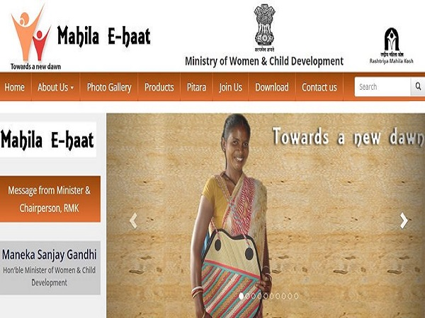

Countries around the world including India are emphasizing on women empowerment. With initiatives like #metoo and #time'sup, violence and discrimination against women gained attention and helped raise the voice of vulnerable and silent victims around the world. The Indian government has also recognized women issues and their contribution to the country's economy. Here are some of the women empowerment initiatives available to women in India:

,